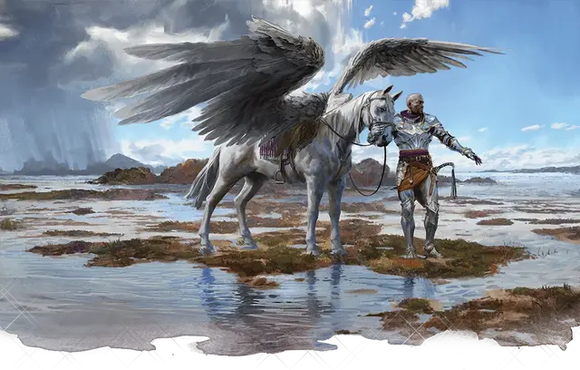

Поиск высшего скакуна
Find Greater Steed
4 уровень, Вызов

Время сотворения 10 минут
Дистанция 30 футов
Компоненты В, С
Длительность Мгновенная
Классы Паладин
Вы призываете духа, который принимает форму верного величественного скакуна. Появляясь в свободном пространстве в пределах дистанции, дух принимает форму, которую вы выбираете: грифон [griffon], пегас [pegasus], перитон [peryton], лютый волк [dire wolf], носорог [rhinoceros] или саблезубый тигр [saber-toothed tiger].
Статистика существа соответствует статистике выбранной формы, хотя на самом деле оно является Исчадием, Небожителем или Феей (по вашему выбору), а не его обычным существом. Кроме того, если его Интеллект равен 5 или меньше, его Интеллект становится равен 6, и он получает возможность понимать один язык на ваш выбор, на котором вы разговариваете.
Вы контролируете скакуна в бою. Пока он находится в пределах 1 мили от вас, вы можете общаться с ним телепатически. Находясь верхом на скакуне, вы можете делать так, что наложенные вами заклинания, нацеливающиеся только на вас, будут нацелены ещё и на скакуна.
Когда хиты скакуна опускаются до 0, он исчезает, не оставляя физического тела. Вы можете также в любое время отпустить скакуна действием, заставляя его исчезнуть. В любом случае, повторное использование этого заклинания призывает этого же скакуна, восстанавливая хиты до максимума и снимая с него все состояния.
У вас не может быть больше одного скакуна, призванного этим заклинанием или заклинанием поиск скакуна [find steed], одновременно. Вы можете действием навсегда отпустить скакуна, освободив его от уз и заставляя исчезнуть.
Каждый раз, когда скакун исчезает, он оставляет предметы, которые нёс или которые были надеты на него.
С разрешения Мастера вы можете призвать духа, принимающего форму драконнеля [dragonnel].